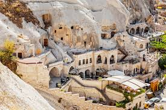
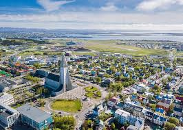
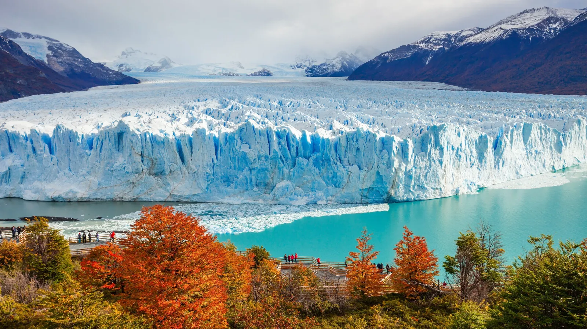
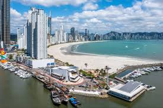
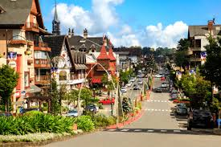

Destinos que Quero Visitar
Paris, França

Paris sempre foi um sonho para mim. A cidade das luzes é famosa pela sua arquitetura deslumbrante, museus incríveis como o Louvre e a Torre Eiffel, além de sua cultura vibrante e culinária maravilhosa. Eu adoraria vivenciar a atmosfera romântica de Paris e explorar seus bairros históricos.
Kyoto, Japão

Kyoto é um destino que sempre me fascinou. Com seus templos antigos, jardins zen e as tradicionais casas de chá, é um lugar onde posso experimentar a serenidade e a paz que a cultura japonesa transmite. Quero muito passear por suas ruas tranquilas e mergulhar na história e tradições do Japão.
Capadócia, Turquia
A Capadócia é um destino mágico, famoso pelos seus balões de ar quente flutuando sobre as paisagens rochosas. Quero viver essa experiência única e ver o nascer do sol sobre o vale de Goreme, além de explorar suas cidades subterrâneas e as formações geológicas impressionantes.
Reykjavik, Islândia
A Islândia sempre me chamou a atenção com suas paisagens naturais únicas, como as geleiras, vulcões e fontes termais. Reykjavik, a capital, é um ponto de partida perfeito para explorar as maravilhas da natureza islandesa, como a famosa Lagoa Azul e o Círculo Dourado.
Patagônia, Argentina
A Patagônia é um lugar que representa a vastidão e a beleza selvagem. Queria muito explorar suas geleiras, montanhas e lagos cristalinos. É o destino perfeito para quem ama a natureza intocada e aventuras ao ar livre.
Destinos que Já Visitei
Balneário Camboriú, SC, Brasil
Balneário Camboriú é um destino perfeito para quem busca praias lindas e uma vida noturna agitada. Adorei conhecer a orla e a famosa Avenida Atlântica. A cidade tem muito a oferecer, com opções de lazer e ótimos restaurantes à beira-mar.
Gramado, RS, Brasil
Gramado é uma cidade encantadora, especialmente no inverno. Com suas construções no estilo europeu e clima frio, é o destino ideal para quem gosta de fondue, vinhos e o famoso Natal Luz. O charme e a tranquilidade de Gramado são irresistíveis.